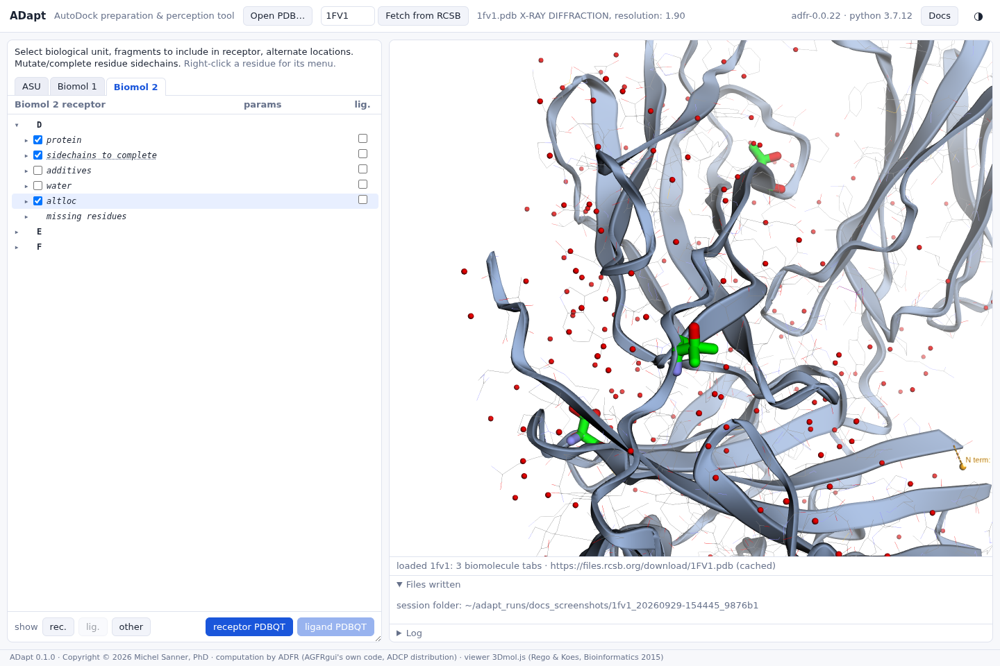
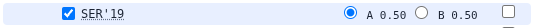
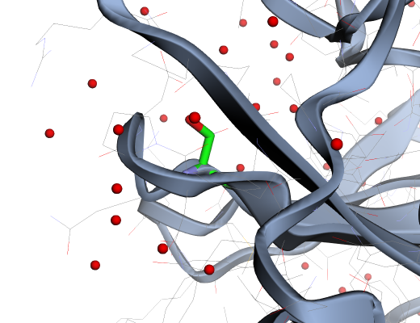
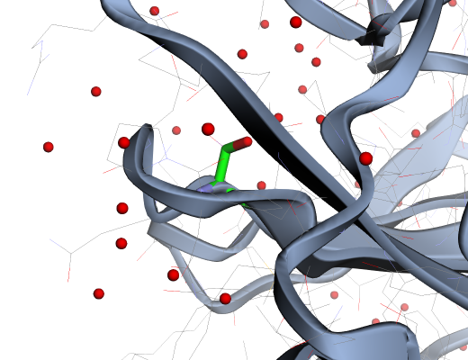

Alternate locations
Where the crystal shows a side chain in more than one conformation, choose the one to dock against.
A residue whose atoms have alternate locations is listed under its chain's altloc group, sorted into the usual categories. Clicking the altloc node itself highlights all of them at once, which is the quickest way to see whether any sits near your pocket, and whether you might want its side chain flexible in docking.

Choosing a location
Each residue offers its locations, with their occupancies, as radio buttons in the params column. The chosen one is used for the receptor, and the others are left out.




The choice is recorded in the receptor file
(REMARK 850 AGFR altlocs D:SER:19:_ @A (0.50)), and it is applied in every tab that
contains the residue.
The default
ADFR selects by default the location with the most atoms, then the one with the highest occupancy.
agfr and AGFRgui. Ties are common (2 of the 20 altloc residues of
4A1X, 4 of 19 in 6BHG). If a tied residue matters for your docking, choose its location explicitly:
the choice you make is always the one written.